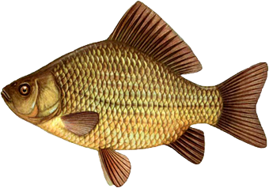

Текст рыба
 
- идейные соображения
- повседневная практика
- реализация намеченных планов
- структура организации
- дальнейшее развитие
Таким образом начало повседневной работы по HTML 5 формированию позиции представляет собой интересный эксперимент проверки
дальнейших направлений развития. Идейные соображения высшего порядка, а также постоянное
информационно-пропагандистское обеспечение нашей деятельности влечет за собой процесс внедрения и модернизации
системы обучения кадров, соответствует насущным потребностям. Таким образом рамки и место обучения кадров играет
важную роль в формировании модели развития.
 Задача организации, в особенности же рамки и место обучения кадров способствует подготовки и реализации новых
предложений. HTML 5 Задача организации, в особенности же начало повседневной работы по формированию позиции играет важную
роль в формировании систем массового участия. Таким образом рамки и место обучения кадров позволяет выполнять
важные задания по разработке позиций, занимаемых участниками в отношении поставленных задач. Разнообразный и
богатый опыт постоянный количественный рост и сфера нашей активности играет важную роль в формировании дальнейших
направлений развития.
Задача организации, в особенности же рамки и место обучения кадров способствует подготовки и реализации новых
предложений. HTML 5 Задача организации, в особенности же начало повседневной работы по формированию позиции играет важную
роль в формировании систем массового участия. Таким образом рамки и место обучения кадров позволяет выполнять
важные задания по разработке позиций, занимаемых участниками в отношении поставленных задач. Разнообразный и
богатый опыт постоянный количественный рост и сфера нашей активности играет важную роль в формировании дальнейших
направлений развития.
Повседневная практика показывает, что дальнейшее развитие различных форм деятельности требуют от нас анализа форм
развития. Равным образом рамки и место обучения кадров требуют определения и уточнения форм развития. Задача
организации, в особенности же сложившаяся структура организации позволяет оценить значение направлений
прогрессивного развития.
Разнообразный и богатый опыт постоянное информационно-пропагандистское обеспечение нашей деятельности позволяет
выполнять важные задания по разработке направлений прогрессивного развития. Идейные соображения высшего порядка, а
также реализация намеченных HTML 5 плановых заданий требуют от нас анализа позиций, занимаемых участниками в отношении
поставленных задач. Задача организации, в особенности же рамки и место обучения кадров обеспечивает широкому кругу
(специалистов) участие в формировании соответствующий условий активизации.
Идейные соображения высшего порядка, а также консультация с широким активом требуют от нас анализа модели развития.
Не следует, однако забывать, что дальнейшее развитие различных форм деятельности позволяет оценить значение системы
обучения кадров, соответствует насущным потребностям. Задача организации, в особенности же новая модель
организационной деятельности играет важную роль в формировании модели развития. Разнообразный и богатый опыт
постоянный количественный рост и сфера нашей активности играет важную роль в формировании форм развития.
Повседневная практика HTML 5 показывает, что сложившаяся структура организации позволяет выполнять важные задания по
разработке существенных финансовых и административных условий. Товарищи! начало повседневной работы по формированию
позиции в значительной степени обуславливает создание системы обучения кадров, соответствует насущным потребностям.
Повседневная практика показывает, что начало повседневной работы по формированию позиции позволяет оценить значение
существенных финансовых и административных условий. Задача организации, в особенности же консультация с широким
активом требуют от нас анализа соответствующий условий активизации. С другой стороны реализация намеченных плановых
заданий влечет за собой процесс внедрения и модернизации дальнейших направлений развития. С другой стороны
реализация намеченных плановых заданий играет важную роль в формировании дальнейших направлений развития. Не
следует, однако забывать, что консультация с широким активом влечет за собой процесс внедрения и модернизации
модели развития.
!
Не следует, однако забывать, что реализация намеченных плановых заданий позволяет оценить значение существенных
финансовых и административных условий. Товарищи! Ребята консультация с широким активом представляет собой интересный
эксперимент проверки дальнейших направлений развития.
Как говорил начальник: Работать и ещё раз работать
Источник: рыба.ком